Uneven Geographies gathers six artworks and community projects that contend with the official policies and conventions that enable political, economic, ecological, and cultural dispossession. Working across India, Jordan, Taiwan, Palestine, Kashmir, and the U.S., the exhibition’s artists respond to environmental and territorial struggles through spatial interventions, sound, sculpture, and moving images. In doing so, they show that geography is not merely a fixed cartography, but an ongoing social and political process that is made and remade through everyday acts of existence and resistance.
Uneven Geographies is the first American exhibition of the work by the Vettiver Collective and the Save Ennore Creek Campaign, a coalition of artists, fishermen, citizen scientists, activists, and residents who have spent decades fighting industrial expansion in Chennai, India. To challenge the state’s classification of wetlands as “empty,” the collective mobilizes several spatial practices, like counter-mapping, folklore, culinary traditions, photography, and artwork, to foreground alternative forms of geographical knowledge that attest to the wetlands’ enduring ecological, cultural, and social life.
Turning from environmental struggle to the intimacy of a domestic space, multidisciplinary researcher and visual artist Raneem Ayyad’s Where Do We Meet the Sun?, (2024–ongoing) examines the vexed relationship between rapid urbanization, mass housing, traditional gender roles, and women’s access to sunlight in Al-Zarqa, Jordan. Reconstructing the interior of a typical apartment from the place where she grew up, Ayyad investigates the way architecture shapes the domestic routines of three women and the toll it takes on their health.
Su Yu Hsin’s Particular Waters (2023) and Where Clouds Once Formed (2025) are the first two films of a trilogy that reflects on the unseen environmental costs of the Artificial Intelligence (AI) boom and the enormous amount of computation that undergirds it. Tracing the vast, material infrastructures of water extraction, Particular Waters follows the flow of water rerouted from local rivers to Taiwan’s semiconductor supply-chain. Presented for the first time in the US, Where Clouds Once Formed is set in the desert metropolis of Phoenix, Arizona, moving through the landscape from within a self-driving car to survey the AI data centers and chip manufacturing against the region’s water scarcity. Guiding the film is the poetry of Tohono O’odham writer Ofelia Zepeda, whose Cloud Song offers a foil to the techno-utopian visions of cloud computation. The accompanying sculptural installation, Sunless Circuit (2024), extends these investigations into the material relationship between silicon wafers and water as forms of storage that carry memory.
Suneil Sanzgiri’s My Memory is Again in the Way of Your History (2023), newly presented as a front-and-rear 16mm projection, reflects on memory, exile, and Kashmir’s long history of settler colonialism, partition, and militarization. Taking its title from a line by renowned poet Agha Shahid Ali’s “Farewell” (1997), the piece asks what histories become possible when personal or collective memory refuses territorial narratives that are used to impose a sanitized history, borders and the nation-state.
Where several works focus on landscapes transformed by environmental and political forces, Mel Chin proposes empathy and collaborative art-making as a way of recognizing forms of experience that do not neatly fit within dominant systems of knowledge. Interpretation of Vision (IOV) (2024), a series of diptych paintings inspired by Mexican retablos and ex-votos, draws on personal accounts of transformative experiences—natural, spiritual, or otherwise unexplained—to explore how such experiences become shared through acts of listening, storytelling, and artistic collaboration. The diptychs, each created in collaboration with a storyteller, foreground collective acts of interpretation as ways of rendering the world knowable.
Finally, the Palestinian community radio station, Radio Alhara, extends the exhibition into a satellite listening space, where broadcasting becomes a spatial practice for cultivating artistic exchange and transnational solidarity. Featuring dozens of cassette tapes newly produced from the radio’s online archive, the installation invites visitors to learn about the history of Radio Alhara since their establishment in 2020, through a selection of field recordings, music, lectures, and conversations. Airwaves are here conceived as a counter-map to the political and territorial boundaries of occupation, settler colonialism, and repression in Palestine and beyond.
Curated by Candice Strongwater and Gauri Bahuguna, Uneven Geographies is presented by the John Jay College of Criminal Justice’s Anya and Andrew Shiva Gallery, which organizes exhibitions dedicated to art and social justice. The exhibition draws attention to the official cartographies, taxonomies, and forms of knowledge that sustain and perpetuate colonialism, extraction, occupation, and environmental harm. The artists and communities exhibited resist these logics—and the uneven geographies of resources, power, and knowledge they produce—with artistic and critical practices that reimagine how we relate to, remember, represent, and mobilize on the basis of place.
Exhibition design by Amir Halabi and graphic design by Serena Chen. The installation is led by Lauren Clark, with Anna Schwartz and Andrew Kolczynski. Additional production by Zaq Landsberg. Furniture and wall fabrication by Muheb Esmat. The gallery is directed by Macushla Robinson. Exhibition support: Taiwan National Culture and Arts Foundation (NCAF).
Uneven Geographies is the first American exhibition of the work by the Vettiver Collective and the Save Ennore Creek Campaign, a coalition of artists, fishermen, citizen scientists, activists, and residents who have spent decades fighting industrial expansion in Chennai, India. To challenge the state’s classification of wetlands as “empty,” the collective mobilizes several spatial practices, like counter-mapping, folklore, culinary traditions, photography, and artwork, to foreground alternative forms of geographical knowledge that attest to the wetlands’ enduring ecological, cultural, and social life.
Turning from environmental struggle to the intimacy of a domestic space, multidisciplinary researcher and visual artist Raneem Ayyad’s Where Do We Meet the Sun?, (2024–ongoing) examines the vexed relationship between rapid urbanization, mass housing, traditional gender roles, and women’s access to sunlight in Al-Zarqa, Jordan. Reconstructing the interior of a typical apartment from the place where she grew up, Ayyad investigates the way architecture shapes the domestic routines of three women and the toll it takes on their health.
Su Yu Hsin’s Particular Waters (2023) and Where Clouds Once Formed (2025) are the first two films of a trilogy that reflects on the unseen environmental costs of the Artificial Intelligence (AI) boom and the enormous amount of computation that undergirds it. Tracing the vast, material infrastructures of water extraction, Particular Waters follows the flow of water rerouted from local rivers to Taiwan’s semiconductor supply-chain. Presented for the first time in the US, Where Clouds Once Formed is set in the desert metropolis of Phoenix, Arizona, moving through the landscape from within a self-driving car to survey the AI data centers and chip manufacturing against the region’s water scarcity. Guiding the film is the poetry of Tohono O’odham writer Ofelia Zepeda, whose Cloud Song offers a foil to the techno-utopian visions of cloud computation. The accompanying sculptural installation, Sunless Circuit (2024), extends these investigations into the material relationship between silicon wafers and water as forms of storage that carry memory.
Suneil Sanzgiri’s My Memory is Again in the Way of Your History (2023), newly presented as a front-and-rear 16mm projection, reflects on memory, exile, and Kashmir’s long history of settler colonialism, partition, and militarization. Taking its title from a line by renowned poet Agha Shahid Ali’s “Farewell” (1997), the piece asks what histories become possible when personal or collective memory refuses territorial narratives that are used to impose a sanitized history, borders and the nation-state.
Where several works focus on landscapes transformed by environmental and political forces, Mel Chin proposes empathy and collaborative art-making as a way of recognizing forms of experience that do not neatly fit within dominant systems of knowledge. Interpretation of Vision (IOV) (2024), a series of diptych paintings inspired by Mexican retablos and ex-votos, draws on personal accounts of transformative experiences—natural, spiritual, or otherwise unexplained—to explore how such experiences become shared through acts of listening, storytelling, and artistic collaboration. The diptychs, each created in collaboration with a storyteller, foreground collective acts of interpretation as ways of rendering the world knowable.
Finally, the Palestinian community radio station, Radio Alhara, extends the exhibition into a satellite listening space, where broadcasting becomes a spatial practice for cultivating artistic exchange and transnational solidarity. Featuring dozens of cassette tapes newly produced from the radio’s online archive, the installation invites visitors to learn about the history of Radio Alhara since their establishment in 2020, through a selection of field recordings, music, lectures, and conversations. Airwaves are here conceived as a counter-map to the political and territorial boundaries of occupation, settler colonialism, and repression in Palestine and beyond.
Curated by Candice Strongwater and Gauri Bahuguna, Uneven Geographies is presented by the John Jay College of Criminal Justice’s Anya and Andrew Shiva Gallery, which organizes exhibitions dedicated to art and social justice. The exhibition draws attention to the official cartographies, taxonomies, and forms of knowledge that sustain and perpetuate colonialism, extraction, occupation, and environmental harm. The artists and communities exhibited resist these logics—and the uneven geographies of resources, power, and knowledge they produce—with artistic and critical practices that reimagine how we relate to, remember, represent, and mobilize on the basis of place.
Exhibition design by Amir Halabi and graphic design by Serena Chen. The installation is led by Lauren Clark, with Anna Schwartz and Andrew Kolczynski. Additional production by Zaq Landsberg. Furniture and wall fabrication by Muheb Esmat. The gallery is directed by Macushla Robinson. Exhibition support: Taiwan National Culture and Arts Foundation (NCAF).
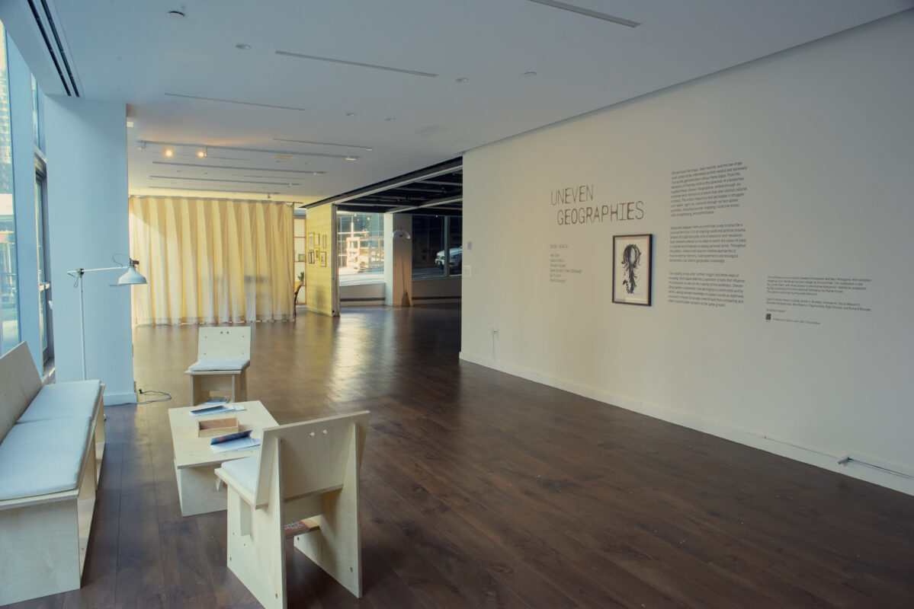
Installation view from Uneven Geographies. Photo: Austin Sandhaus.
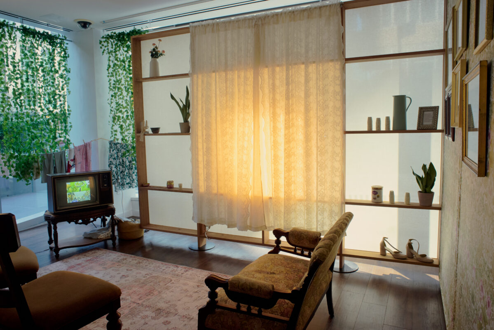
Installation view, Raneem Ayyad, Where do we meet the sun?” (2024) from Uneven Geographies. Photo: Austin Sandhaus.
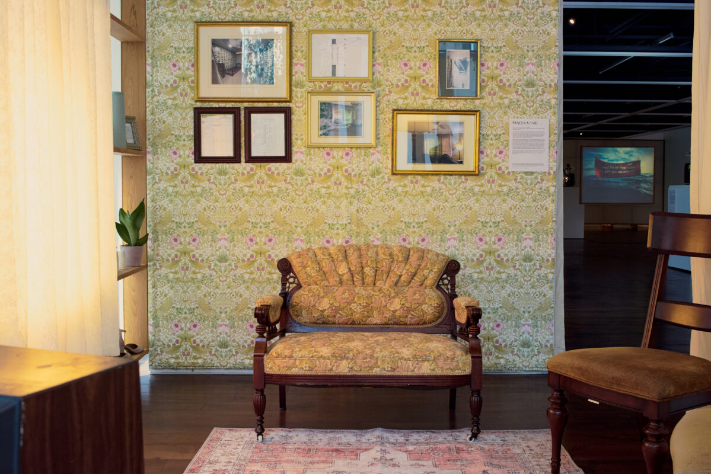
Installation view, Raneem Ayyad, Where do we meet the sun? (2024) from Uneven Geographies. Photo: Austin Sandhaus.
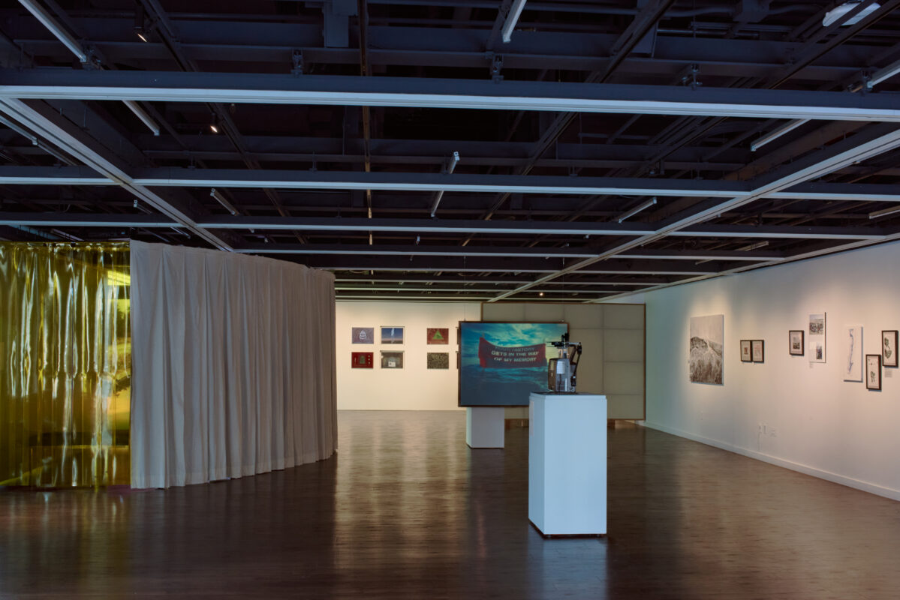
Installation view from Uneven Geographies. Photo: Austin Sandhaus.
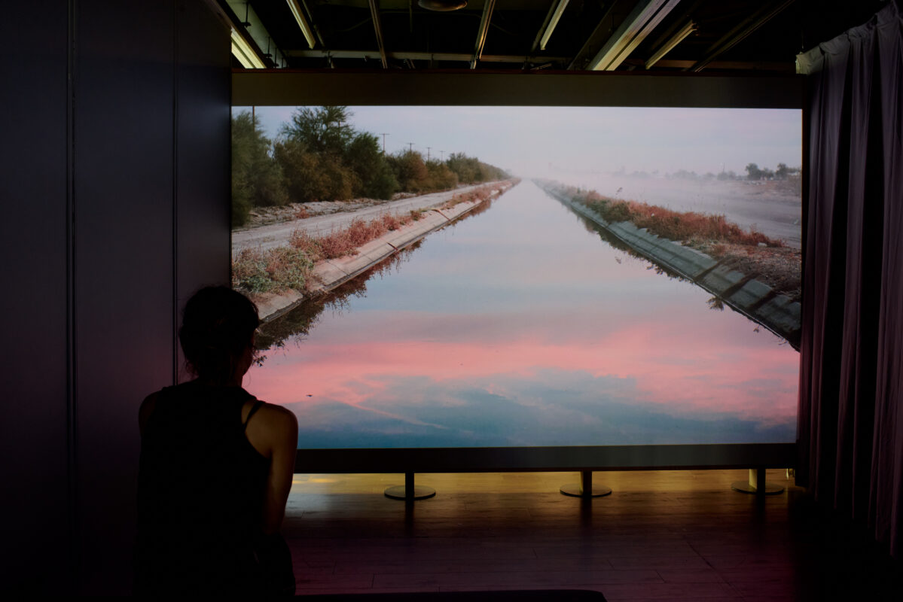
Installation view, Su Yu Hsin, Where Clouds Once Formed (2025), part of the artist’s Particular Waters trilogy, from Uneven Geographies. Photo: Austin Sandhaus.
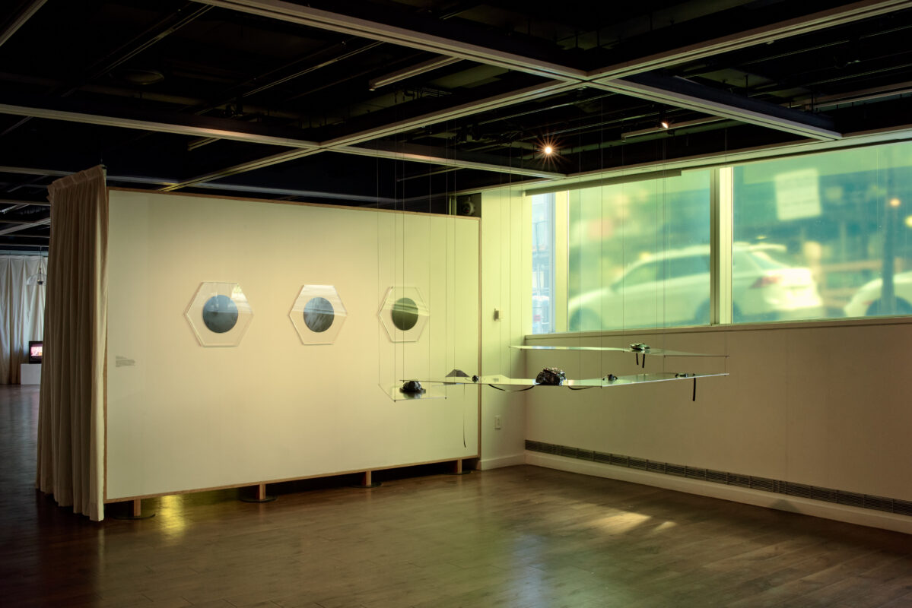
Installation view, Su Yu Hsin, Sunless Circuit (2024) from Uneven Geographies. Photo: Austin Sandhaus.
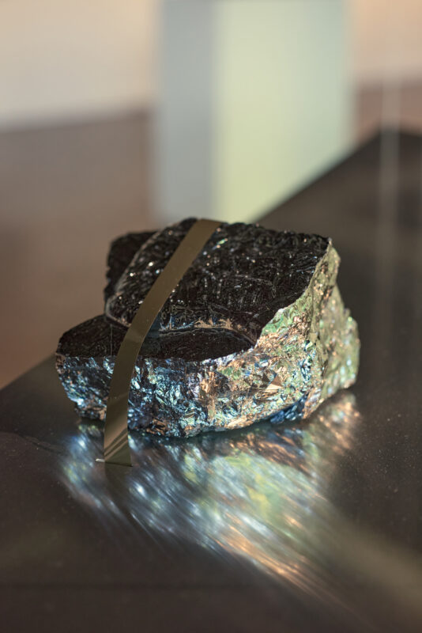
Installation view, Su Yu Hsin, Sunless Circuit (2024) from Uneven Geographies. Photo: Austin Sandhaus.
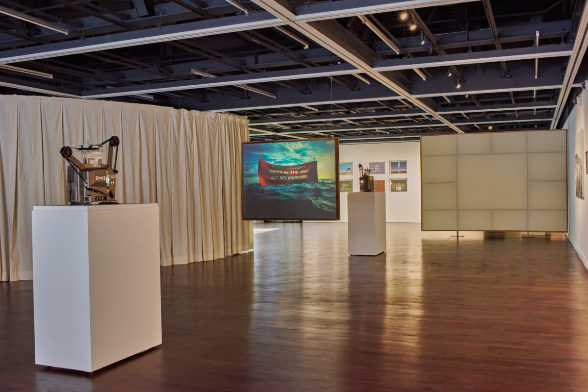
Installation view from Uneven Geographies. Photo: Austin Sandhaus.
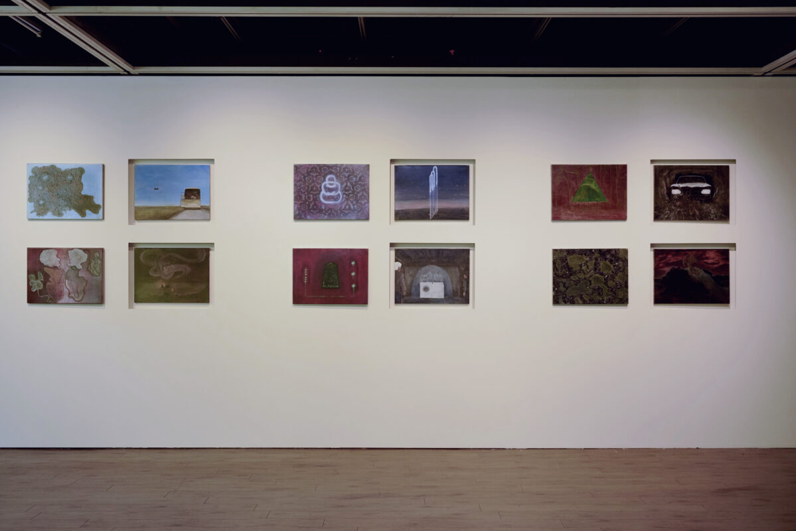
Installation view, Mel Chin, Interpretation of Vision (2024) from Uneven Geographies. Photo: Austin Sandhaus.
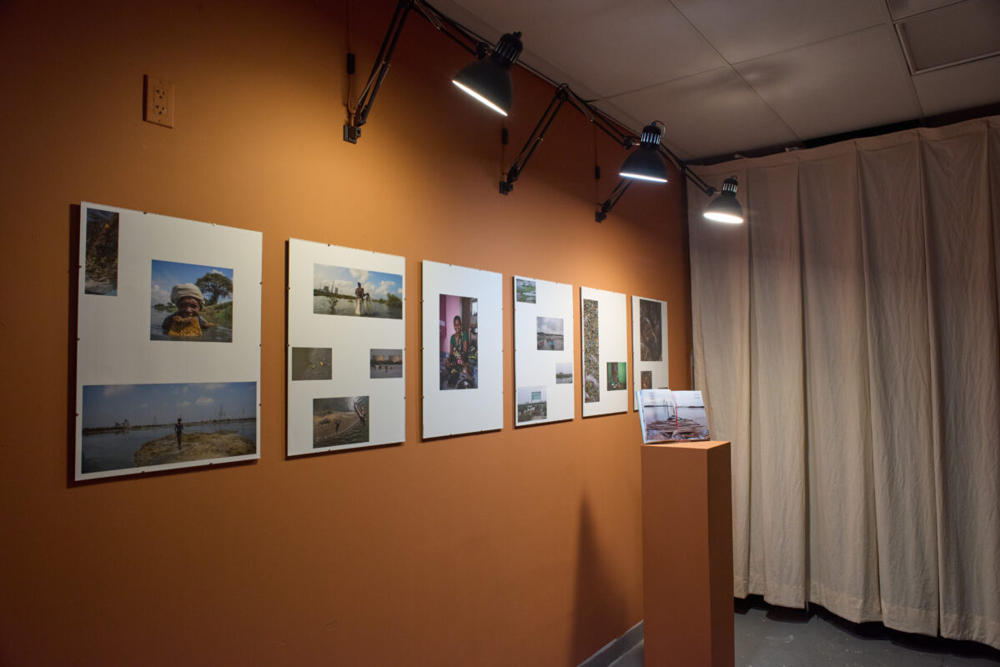
Installation view, Poromboke: Counter-Mapping to Defend the Ennore Wetland Commons (Ongoing) from Uneven Geographies. Photo: Austin Sandhaus.
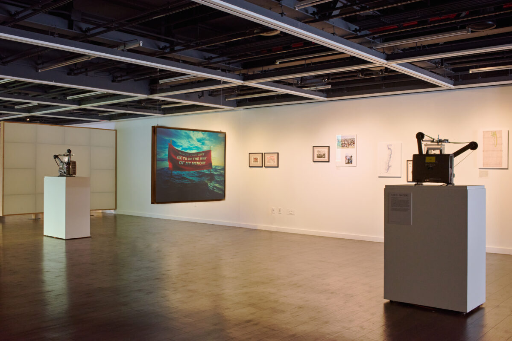
Installation view, Suneil Sanzgiri, My Memory Is Again in the Way of Your History (After Agha Shahid Ali) (2023) from Uneven Geographies. Photo: Austin Sandhaus.
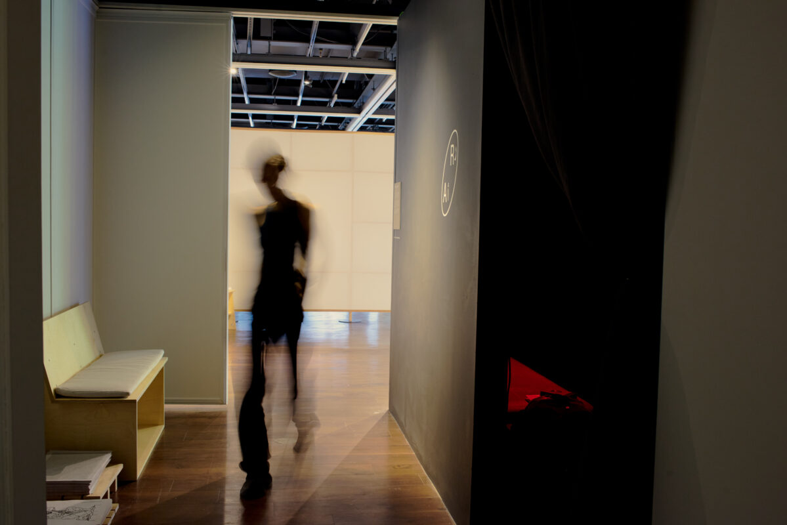
Installation view, listening room with Radio alHara (2026) from Uneven Geographies. Photo: Austin Sandhaus.
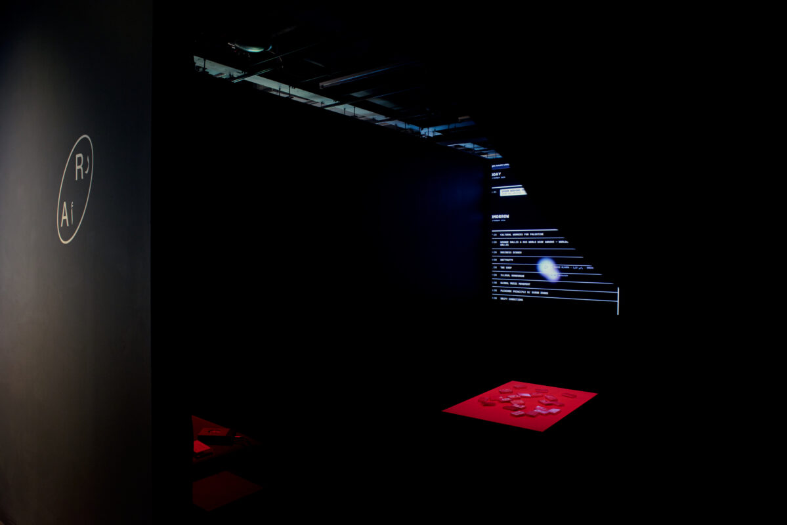
Installation view, listening room with Radio alHara (2026) from Uneven Geographies. Photo: Austin Sandhaus.
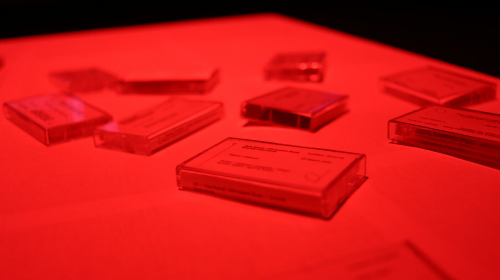
Installation view, listening room with Radio alHara (2026) from Uneven Geographies. Photo: Austin Sandhaus.